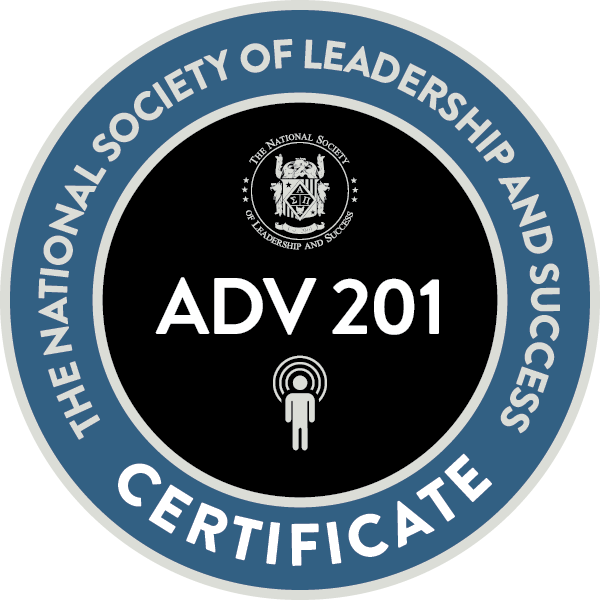

¡Sobre mí!
 Energética recepcionista del Centro Educativo Comunitario.
5 años de comunicación efectiva con todo tipo de personas. Hábil para resolver problemas rápidamente. Soy una persona.
con integridad para el trabajo. Buena comunicación verbal y escrita, planificación de proyectos y habilidades organizativas. Eso me llevó en mi actual
trabajo, fui nombrado líder de equipo para un tiempo de transición interna. Esto demuestra que puedo superar, , colaborar y
realizar eventos o proyectos. También, comunicación con el equipo para ayudar con necesidades adicionales. Permitir a los clientes una garantía de su
evento sin problemas, durante el tiempo de transición interna. Un miembro del equipo con una sólida técnica informática, capaz
de evaluar y llevar a cabo riesgos y solucionar problemas. He trabajado varios proyectos como traductora con diferentes.
aplicación. Como puedes ver, incluso he hecho mi sitio web, tanto en español como en inglés.
Energética recepcionista del Centro Educativo Comunitario.
5 años de comunicación efectiva con todo tipo de personas. Hábil para resolver problemas rápidamente. Soy una persona.
con integridad para el trabajo. Buena comunicación verbal y escrita, planificación de proyectos y habilidades organizativas. Eso me llevó en mi actual
trabajo, fui nombrado líder de equipo para un tiempo de transición interna. Esto demuestra que puedo superar, , colaborar y
realizar eventos o proyectos. También, comunicación con el equipo para ayudar con necesidades adicionales. Permitir a los clientes una garantía de su
evento sin problemas, durante el tiempo de transición interna. Un miembro del equipo con una sólida técnica informática, capaz
de evaluar y llevar a cabo riesgos y solucionar problemas. He trabajado varios proyectos como traductora con diferentes.
aplicación. Como puedes ver, incluso he hecho mi sitio web, tanto en español como en inglés.
Si quieres contratarme para entrenamiento personal o clases de enseñanza, Puedes reservarme!
Educación
Universidad Estatal de Weber
Título de asociado en Español
| La Sociedad Nacional de Liderazgo y Éxito | Ventajas de Wildcat | Certificación de Apex |
|---|---|---|
| Inducción | Nivel 1 | Principal |
| Certificación avanzada | Nivel 2 | Carrera |
| Certificación Ejecutiva | Nivel 3 | Difusión Pública |
| Educación |
| Clases de Español | Clases de Traducción | Clases de Ciencias Computacionales |
|---|---|---|
| Superhéroes latinos en los medios | Traducción de idiomas comerciales | Front-End |
| Sostenibilidad en los medios | Traducción audiovisuales | Introducion de Computacion |
| La Inmigración en el Cine | Traduccion de Medicina | Programmacion 1 |
| Patrimonio Cultural de España | Traducción |
Experiencia
Recepcionista bilingüe,
Nov. 2021—Present
Centro Educactivo Comunitario de la Universidad Estatal de Weber | Ogden, UT
- Bilingüe en Español e Inglés.
- Logré una puntuación de satisfacción del cliente del 95% basada en formularios de comentarios.
- Manejé con éxito 50 llamadas telefónicas diarias sin quejas durante los últimos 2 años.
- Saludar y ayudar a los clientes con información y registro para programas en el CEC de WSU
- Consultando eventos en el sistema de programación de oficinas.
Coordinador del sitio de YMCA,
Aug. 2020–Mayo 2021
YMCA | Ogden, UT
- Administré todas las actividades, incluyendo el currículo y excursiones para el programa después de la escuela con más de 3 miembros del equipo.
Logros:
- Creó un nuevo YMCA altamente efectivo, Taylor Canyon, que impactó significativamente la eficiencia y mejoró las operaciones en un 95%.
- Ascendido de Especialista de YMCA a Coordinador de Sitio de YMCA, en menos de 12 meses.
- Reconocido como Empleado de los 9 meses por desempeño sobresaliente y contribuciones al equipo.
- Crear nuevos clubes altamente efectivos que impactaron significativamente la eficiencia y mejoraron la operación.
¡Lo que significó trabajar en la YMCA!
Servicio Voluntario
Voluntaria Traductora e Interpretación
Enero 2023–Present
Los Defensores de los Derechos Humanos
- Ayudar a traducir documentos de inmigración del español al inglés.
- Ayuda a interpretar para clientes de inmigración de español a inglés.
Para obtener más información, ¡Conviértase en traductor o intérprete para Los Defensores de los Derechos Humanos!
Traductor voluntario de Ted Talk
Marzo 2022 to Present
Ted Talks
- Ayude a traducir videos de charlas TED del español al inglés.
Para obtener más información, ¡Conviértase en traductor de TED!
Voluntario como Asistente Preescolar
Marzo 2017 to Marzo 2020
Preescolar Wee Lads y Lassies | Ogden, UT
- Sea un jugador de equipo y cree un ambiente de trabajo motivado y amigable con otros empleados.
- Coordinó y organizó decoraciones, equipos y servicio de alimentos para facilitar diversas actividades de entretenimiento.
- Monitoreó a los estudiantes para observar el comportamiento, hacer cumplir las reglas y mantener la seguridad.